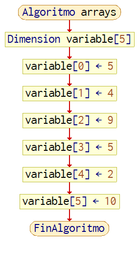

No te ha pasado que tienes que declarar variables de un mismo tipo a la vez, pero tienes que escribir y declarar cada variable
una por una? Verdad que seria genial declarar todas al mismo tiempo y sin esfuerzo? Pues para eso existen los Arrays y Matrices
los cuales son van a facilitar la vida a la hora de declarar variables en gran numero, asi que empecemos!
Arrays
Los Arrays o arreglos de variables, son conocidos como vectores unidimensionales, los cuales pueden almacenar
un gran numero de variables, siempre y cuando tengan el mismo tipo. Es como decir que vamos a tener un grupo de manzanas, en ella solo pueden
haber manzanas, y nada mas. Pues mas o menos asi seria una analogia para los Arrays, que pueden almacenar gran cantidad de variables del mismo tipo, estas
pueden ser del tipo int, float, char, string, double, bool y ahora vamos a pasar a ver su sintaxis en C++.
Linea 1: Como una variable comun, ponemos el tipo de dato int luego el nombre del arreglo, y entre corchetes, ira la dimension
la cual se controla por el indice el cual es el numero, en este caso, nuestro indice sera 10, igual, vamos a resaltar que
el indice, siempre tendra un espacio de mas, ya que siempre se inicia en 0, por lo que tendremos 11 espacios en realidad.
Como vimos, se pueden iniciar los arreglos sin asignacion de valor, pero igual, si los separamos por comas, podemos asignar cada uno al espacio que corresponde.
Si lo igualamos, y dentro de llaves ponemos los valores.
Asi mismo, podemos incluso, solo asignar el valor de un espacio de memoria de un valor array con una dimension. En este caso, acabamos de declarar
numero1 con una dimension de 3 por lo que si solo le queremos asignar valor, al indice 2
de nuestro arreglo, se declara numero[2] y se le asigna como una variable comun.
//Arreglos sin asignarint numero[10];
char cadena[17];
float decimal[3];
bool logico[10];
//Arreglos con asignacionint numero1[3] = {1, 2, 3, 4};
//Asignar solo unoint numero1[2] = 10;
Lectura/Salida de arrays por consola
Para poder imprimir y leer vectores por consola, se puede hacer de la manera tradicional, unicamente poninendo el indice del array al que queremos
acceder, en este caso, queremos imprimir la letra " b ", que si notamos, se encuentra en el indice 2, de nuestro arreglo
de caracteres, entonces ponemos cout >>cadena[2];.
Para leer es exactamente lo mismo, ponemos el array, el indice que queremos leer, y con eso basta.
//Salida por Consolachar caracteres[3] = {'a', 'b', 'c'};
cout << caracteres[2] << endl;
//Entrada por Consolachar caracteres[3];
cin >> caracteres[1];
El diagrama de flujo de Arrays seria el siguiente:

Ejemplo 1
Tenemos que desarrollar un programa que pueda leer 3 nombres, y luego imprimirlos en pantalla. Puede apoyarse con bucles si quiere.
Esto sera sencillo, primero vamos a declarar nuestro arreglo sin asignacion de valor, en este caso nombres y le ponemos de indice 3 , para almacenar 3 nombres, los cuales seran de tipo cadena, y eso significa que antes debimos incluir la libreria string.h la cual nos permitira usar sus instrucciones, con esto, dentro de la funcion principal, vamos a imprimir un mensaje pidiendo los 3 nombres en orden, y luego leyendolos, unicamente cambiando el numero del indice del arreglo que tengamos, en este caso, usaremos 3 de 4 espacios (excluyendo el 0), y ya como ultimo, imprimimos todo, como variables normales, solo cambiando el numero del indice.
Las Matrices vectores bidimensionales, o vectores de vectores, son exactamente iguales a los arrays en cuanto a funcion de almacenar gran parte de informacion del mismo tipo, solo que esta vez, tendremos otra estructura, ya que con los arrays, unicamente podiamos almacenar informacion de manera lineal, pero ahora, tenemos filas y columnas, en donde cada uno tiene un indice, y ella, podemos tener sectores, en donde almacenar informacion.
Primero te mostrare un poco de la sintaxis de las matrices en C++, y posteriormente te mostrare una tabla para enteder de mejor manera como funcionan las matrices :D
No voy a explicar el codigo por lineas, porque la diferencia que tienen es minima, ya que nos damos cuenta, que solo hay que agregar un par de corchetes mas para poder convertir un arreglo a matriz [ ]
Con respecto a la asignacion, podemos tenerla de dos formas, una forma seria como vimos anteriormente matriz [2][2] = {1, 2, 3, 4} y otra forma seria separando por grupos, paraa mas orden, como se muestra en el bloque de codigo. matriz [2][2] = { {1, 2}{3, 4} }, igual que para asignar un valor a un solo sector, tendriamos que poner los indices de la columna y fila a la que queremos acceder, y asignarle el valor correspondiente, y listo! :)
//Matrices sin asignarint numero[10][7];
float numero[17][1];
//Matrices con asignacionint numero1[2][2] = {{1, 2}{3, 4}};
//Asignar solo un sectorint numero1[1][0] = 7;
Para explicar las matrices de mejor manera, te presento esta tabla, la cual tiene filas y columnas,bien, ahora, podemos ver esto como un tablero con cuadrantes o sectores, en donde cada numero tiene un indice dentro de la tabla para encontrarlo. Ejemplo: queremos encontrar la direccion o ubicacion del numero 35 en esta tabla. Pues primero nos dirigmos a las columnas, y vemos que cada una de ellas esta ennumerada, desde la 0 a la 10, entonces vamos a contar hasta que columna se encuentra nuestro numero, y vemos que se encuentra en la fila 7, bien! ahora ya sabemos la columna, seguimos y nos fijamos en las filas, las cuales igualmente estan enumeradas, y con eso ya podemos buscar en que fila se encuentra nuestro numero, y vemos que se encuentra en la fila 5 asi que ahora sabemos su direccion! la cual seria Fila 5, Columna 7 y asi funcionarian las matrices, pongamos otro ejemplo. Ahora busquemos la direccion del numero 10, la cual se encuentra en la columna 1, y la fila 10, y con eso ya ubicamos otro numero, recordemos que siempre comenzamos desde el 0, en ambos indices.
Recorrer una matriz
Para recorrer una matriz, vamos a necesitar de 2 variables auxiliares, las cuales van a corresponder al numero de filas y columnas respectivamente, las cuales seran "i" y "j", y para esto usaremos de igual manera, ciclos anidados FOR, Y lo haremos de la siguiente manera, usando esta estructura.
Vamos a crear una matriz de 3 x 3 primeramente, que ya sabemos que es poniendo 3 y 3 en los corchetes de los indices respectivamente, lo cual sera una matriz entera
Luego vamos a poner un bucle For y le inicializamos la variable " i ", justo debajo, declaramos un bucle exactamente igual, pero en lugar de declara " i " vamos a declarar " j ", y la condicion para cada uno, sera que se repita cuando el iterador sea menor a 3. Dentro de el vamos a mandar un mensaje por cada vuelta para que el usuario llene los 9 espacios de nuestra matriz con numeros que decida. Y leemos con cin << matriz[i][j] usando de indices las variables del iterador, lo cual nos facilitara el hecho de rellenar la matriz, porque por cada vuelta, aumenta en uno, y asi pasa con el siguiente bucle.
Para imprimir nuestra matriz, es muy sencillo, ya que solo hay que repetir la estructura de los bucles anidados de nuevo, y esta vez, en lugar de recoger los datos, los vamos a imprimir con cout << matriz [i][j];.
#include <iostream.h>using namespace std;
int main () {
int matriz [3][3];
for (int i = 0; i < 3; i++ ) {
for (int j = 0; j < 3; j++ ) {
cout << "Ingrese el valor fila " << i << "columna " j << endl;
cin >> matriz [i][j];
}
}
cout << endl;
for (int i = 0; i < 3; i++ ) {
for (int j = 0; j < 3; j++ ) {
cout << matriz [i][j] << " " << endl;
}
cout << endl;
}
return 0;
}
Ejercicios Practicos
-Desarrollar un programa que le pida al usuario cuantas columnas y filas va a querer en su matriz, y posteriormente, imprimir dicha matriz
-Crear programa que declare un arreglo de 25 numeros, y luego llenarlos de numeros aleatorios. (Puede investigar sobre la funcion rand( ); y math.h para facilitarlo) asi mismo, puede apoyarse de bucles.